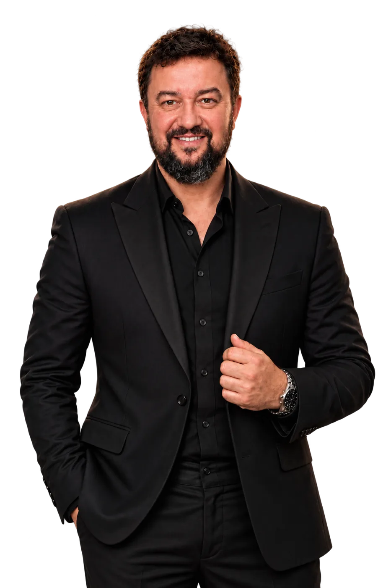

Jovem Pan News Rio · Revista Timeline
Jornalismo
Comentarista da Jovem Pan News Rio e autor na Revista Timeline, com artigos, entrevistas e análises sobre política e temas nacionais.
Ler artigos ↗

Fato, dado e opinião.
Sou jornalista, professor e pesquisador. Comento política na Jovem Pan News Rio e escrevo na Revista Timeline.
Jovem Pan News Rio · Revista Timeline
Comentarista da Jovem Pan News Rio e autor na Revista Timeline, com artigos, entrevistas e análises sobre política e temas nacionais.
Ler artigos ↗Startups, universidades e governo
Coordeno o HUB RJ de Inovação, que conecta startups, universidades, empresas e instituições em todas as regiões do Estado do Rio de Janeiro.
Saiba mais ↓Mestre pelo PROFNIT/UFRJ
Pesquisas em inovação e propriedade intelectual, e estudos eleitorais com bases documentadas, como o Observatório Eleitoral e a análise das apurações presidenciais.
Acessar estudos ↗Professor da FAETEC desde 1999
Ensino, coordenação e direção de tecnologia na FAETEC, onde fui vice-presidente. Também presidi a Fundação CECIERJ, de educação científica e formação de professores.
Conheça a trajetória ↓Sou jornalista, professor e pesquisador. Minha trajetória começou na educação tecnológica, em 1999, na FAETEC, onde atuei em sala de aula e em funções de gestão, incluindo a direção de tecnologia e a vice-presidência. Também presidi a Fundação CECIERJ, ligada à educação científica e à formação de professores.
Minha formação reúne Ciência da Computação, pós-graduação em Gestão de Projetos pela PUC-Rio e mestrado no PROFNIT/UFRJ. Recebi ainda o título honorífico de Doutor Honoris Causa, distinto de um doutorado acadêmico.
Na inovação, coordeno o HUB RJ de Inovação e trabalho na aproximação entre conhecimento, empreendedorismo e oportunidades. No jornalismo, comento política na Jovem Pan News Rio e produzo análises, entrevistas e pesquisas para a Revista Timeline.
Rogerio Pires
Jornalista · Professor · Mestre · Doutor Honoris Causa
Uma frente importante da minha atuação é conectar pessoas, conhecimento e oportunidades no ecossistema fluminense de inovação. Como coordenador do HUB RJ de Inovação, participo da articulação de iniciativas voltadas a startups, empreendedorismo, universidades, empresas e poder público.
Minha experiência na educação tecnológica e na gestão pública orienta esse trabalho: aproximar a formação de talentos das necessidades reais de quem empreende e desenvolve soluções.
Fale comigoO HUB RJ aproxima
Pesquisa
Comparações entre pesquisas eleitorais e resultados oficiais, com metodologia e documentação.
Conhecer o projeto ↗Estudo
Séries temporais e comportamento das curvas de apuração, com os limites metodológicos explicitados.
Ver o estudo ↗Jornalismo
Artigos, análises e entrevistas sobre os acontecimentos políticos e sociais do Brasil.
Acessar a revista ↗Acompanhe artigos, pesquisas e comentários nas redes.